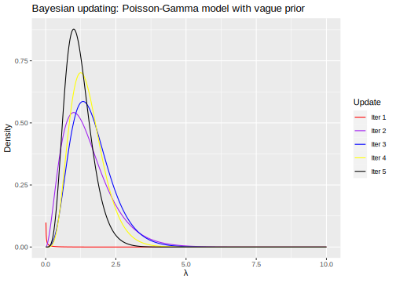

1.2 Bayesian framework: A brief summary of theory
For two random objects \(\mathbf{\theta}\) and \(\mathbf{y}\), the Bayes’ rule may be analogously used,5
\[\begin{align} \pi(\mathbf{\theta}|\mathbf{y})&=\frac{p(\mathbf{y}|\mathbf{\theta}) \times \pi(\mathbf{\theta})}{p(\mathbf{y})}, \tag{1.3} \end{align}\]
where \(\pi(\mathbf{\theta}|\mathbf{y})\) is the posterior density function, \(\pi(\mathbf{\theta})\) is the prior density, \(p(\mathbf{y}|\mathbf{\theta})\) is the likelihood (statistical model), and
\[\begin{equation} p(\mathbf{y})=\int_{\mathbf{\Theta}}p(\mathbf{y}|\mathbf{\theta})\pi(\mathbf{\theta})d\mathbf{\theta}=\mathbb{E}\left[p(\mathbf{y}|\mathbf{\theta})\right] \tag{1.4} \end{equation}\]
is the marginal likelihood or prior predictive.
Remarks
Observe that \(p(\mathbf{y}|\mathbf{\theta})\) is not a density in \(\mathbf{\theta}\). In addition, \(\pi(\mathbf{\theta})\) does not have to integrate to 1, that is, \(\pi(\mathbf{\theta})\) can be an improper density function, \(\int_{\mathbf{\Theta}}\pi(\mathbf{\theta})d\mathbf{\theta}=\infty\). However, \(\pi(\mathbf{\theta}|\mathbf{y})\) is a proper density function, that is, \(\int_{\mathbf{\Theta}}\pi(\mathbf{\theta}|\mathbf{y})=1\). For instance, set \(\pi(\mathbf{\theta})=c\), where \(c\) is a constant, then \(\int_{\mathbf{\Theta}}cd\mathbf{\theta}=\infty\). However, \(\int_{\mathbf{\Theta}}\pi(\mathbf{\theta}|\mathbf{y})d\mathbf{\theta}=\int_{\mathbf{\Theta}}\frac{p(\mathbf{y}|\mathbf{\theta})\times c}{\int_{\mathbf{\Theta}} p(\mathbf{y}|\mathbf{\theta})\times c d\mathbf{\theta}}d\mathbf{\theta}=1\) where \(c\) cancels out.
\(\pi(\mathbf{\theta}|\mathbf{y})\) is a sample updated “probabilistic belief” version of \(\pi(\mathbf{\theta})\), where \(\pi(\mathbf{\theta})\) is a prior probabilistic belief which can be constructed from previous empirical work, theory foundations, expert knowledge and/or mathematical convenience. This prior usually depends on parameters, which are named hyperparameters. In addition, the Bayesian approach implies using a probabilistic model about \(\mathbf{y}\) given \(\mathbf{\theta}\), that is, \(p(\mathbf{y}|\mathbf{\theta})\), where its integral over \(\mathbf{\Theta}\), \(p(\mathbf{y})\) is named the model evidence due to being a measure of model fit to the data.
Observe that the Bayesian inferential approach is conditional, that is, what can we learn about an unknown object \(\mathbf{\theta}\) given that we already observed \(\mathbf{y}\)? The answer is also conditional on the probabilistic model, that is \(p(\mathbf{y}|\mathbf{\theta})\). So, what if we want to compare different models, let’s say \(\mathcal{M}_m\), \(m=\left\{1,2,\dots,M\right\}\). Then, we should make explicit this in the Bayes’ rule formulation,
\[\begin{align} \pi(\mathbf{\theta}|\mathbf{y},\mathcal{M}_m)&=\frac{p(\mathbf{y}|\mathbf{\theta},\mathcal{M}_m) \times \pi(\mathbf{\theta}|\mathcal{M}_m)}{p(\mathbf{y}|\mathcal{M}_m)}. \tag{1.5} \end{align}\]
The posterior model probability is
\[\begin{align} \pi(\mathcal{M}_m|\mathbf{y})&=\frac{p(\mathbf{y}|\mathcal{M}_m) \times \pi(\mathcal{M}_m)}{p(\mathbf{y})}, \tag{1.6} \end{align}\]
where \(p(\mathbf{y}|\mathcal{M}_m)=\int_{\mathbf{\Theta}}p(\mathbf{y}|\mathbf{\theta},\mathcal{M}_m) \times \pi(\mathbf{\theta}|\mathcal{M}_m)d\mathbf{\theta}\) due to equation (1.5), and \(\pi(\mathcal{M}_m)\) is the prior model probability.
Calculating \(p(\mathbf{y})\) in equations (1.3) and (1.6) is very demanding most of the realistic cases. Fortunately, it is not required when performing inference about \(\mathbf{\theta}\) as this is integrated out from it. Then, all what you need to know about the shape of \(\mathbf{\theta}\) is in \(p(\mathbf{y}|\mathbf{\theta},\mathcal{M}_m) \times \pi(\mathbf{\theta}|\mathcal{M}_m)\) or without explicitly conditioning on \(\mathcal{M}_m\),6
\[\begin{align} \pi(\mathbf{\theta}|\mathbf{y})& \propto p(\mathbf{y}|\mathbf{\theta}) \times \pi(\mathbf{\theta}). \tag{1.7} \end{align}\]
Equation (1.7) is a very good shortcut to perform Bayesian inference about \(\mathbf{\theta}\).
We also can avoid calculating \(p(\mathbf{y})\) when performing model selection (hypothesis testing) using posterior odds ratio, that is, comparing models \(\mathcal{M}_1\) and \(\mathcal{M}_2\),
\[\begin{align} PO_{12}&=\frac{\pi(\mathcal{M}_1|\mathbf{y})}{\pi(\mathcal{M}_2|\mathbf{y})}\\ &=\frac{\pi(\mathbf{y}|\mathcal{M}_1)}{\pi(\mathbf{y}|\mathcal{M}_2)}\times\frac{\pi(\mathcal{M}_1)}{\pi(\mathcal{M}_2)}, \tag{1.8} \end{align}\]
where the first term in equation (1.8) is named the Bayes Factor, and the second term is the prior odds. Observe that the Bayes Factor is a ratio of ordinates for \(\mathbf{y}\) under different models. Then, the Bayes Factor is a measure of relative sample evidence in favor of model 1 compared to model 2.
However, we still need to calculate \(p(\mathbf{y}|\mathcal{M}_m)=\int_{\mathbf{\Theta}}p(\mathbf{y}|\mathbf{\theta},\mathcal{M}_m)\pi(\mathbf{\theta}|\mathcal{M}_m)d\mathbf{\theta}=\mathbb{E}\left[p(\mathbf{y}|\mathbf{\theta},\mathcal{M}_m)\right]\). For this integral to be meaningful, the prior must be proper. Using improper prior has unintended consequences when comparing models.
A nice feature of this approach is that if we have an exhaustive set of compiting models such that \(\sum_{m=1}^M \pi(\mathcal{M}_m|\mathbf{y})=1\), then we can recover \(\pi(\mathcal{M}_m|\mathbf{y})\) without calculating \(p(\mathbf{y})\). In particular, given two models \(\mathcal{M}_1\) and \(\mathcal{M}_2\) such that \(\pi(\mathcal{M}_1|\mathbf{y})+\pi(\mathcal{M}_2|\mathbf{y})=1\). Then, \(\pi(\mathcal{M}_1|\mathbf{y})=\frac{PO_{12}}{1+PO_{12}}\) and \(\pi(\mathcal{M}_2|\mathbf{y})=1-\pi(\mathcal{M}_1|\mathbf{y})\). In general, \(\pi(\mathcal{M}_m|\mathbf{y})=\frac{\pi(\mathbf{y}|\mathcal{M}_m)\times \pi(\mathcal{M}_m)}{\sum_{l=1}^M \pi(\mathbf{y}|\mathcal{M}_l)\times \pi(\mathcal{M}_l)}\).
Table 1.1 shows guidelines for the interpretation of \(2\log(PO_{12})\) (Kass and Raftery 1995). This is done to replicate the structure of the likelihood ratio test statistic. However, posterior odds do not require nested models as the likelihood ratio test does.
| \(2\log(PO_{12})\) | \(PO_{12}\) | Evidence against \(\mathcal{M}_{2}\) |
|---|---|---|
| 0 to 2 | 1 to 3 | Not worth more than a bare mention |
| 2 to 6 | 3 to 20 | Positive |
| 6 to 10 | 20 to 150 | Strong |
| > 10 | > 150 | Very strong |
The Bayesian approach is also suitable to get probabilistic predictions, that is, we can obtain a posterior predictive density
\[\begin{align} \pi(\mathbf{Y}_0|\mathbf{y},\mathcal{M}_m) & =\int_{\mathbf{\Theta}}\pi(\mathbf{Y}_0,\mathbf{\theta}|\mathbf{y},\mathcal{M}_m)d\mathbf{\theta}\\ &=\int_{\mathbf{\Theta}}\pi(\mathbf{Y}_0|\mathbf{\theta},\mathbf{y},\mathcal{M}_m)\pi(\mathbf{\theta}|\mathbf{y},\mathcal{M}_m)d\mathbf{\theta}. \tag{1.9} \end{align}\]
Observe that equation (1.9) is again an expectation \(\mathbb{E}[\pi(\mathbf{Y}_0|\mathbf{\theta},\mathbf{y},\mathcal{M}_m)]\), this time using the posterior distribution. Therefore, the Bayesian approach takes estimation error into account when performing prediction.
As we have shown many times, expectation (integration) is a common feature in Bayesian inference. That is why the remarkable relevance of computation based on Monte Carlo integration in the Bayesian framework.
If we want to consider model uncertainty in prediction or any unknown probabilistic object, we can follow same arguments. In the prediction case,
\[\begin{align} \pi(\mathbf{Y}_0|\mathbf{y})&=\sum_{m=1}^M \pi(\mathcal{M}_m|\mathbf{y})\pi(\mathbf{Y}_0|\mathbf{y},\mathcal{M}_m), \end{align}\]
and parameters case,
\[\begin{align} \pi(\mathbf{\theta}|\mathbf{y})&=\sum_{m=1}^M \pi(\mathcal{M}_m|\mathbf{y})\pi(\mathbf{\theta}|\mathbf{y},\mathcal{M}_m), \end{align}\]
where
\[\begin{align} \mathbb{E}(\mathbf{\theta}|\mathbf{y})=\sum_{m=1}^{M}\hat{\mathbf{\theta}}_m \pi(\mathcal{M}_m|\mathbf{y}), \tag{1.10} \end{align}\]
and
\[\begin{align} Var(\mathbf{\theta}|\mathbf{y})= \sum_{m=1}^{M}\pi(\mathcal{M}_m|\mathbf{y}) \widehat{Var} (\mathbf{\theta}|\mathbf{y},\mathcal{M}_m)+\sum_{m=1}^{M} \pi(M_m|\mathbf{y}) (\hat{\mathbf{\theta}}_m-\mathbb{E}[\mathbf{\theta}|\mathbf{y})]^2, \tag{1.11} \end{align}\]
\(\hat{\mathbf{\theta}}_m\) and \(\widehat{Var}(\mathbf{\theta}|\mathbf{y},\mathcal{M}_m)\) are the posterior mean and variance under model \(m\), respectively.
Observe how the variance in equation (1.11) encloses extra variability due to potential differences between mean posterior estimates associated with each model, and the posterior mean involving model uncertainty in equation (1.10). The previous equations illustrates Bayesian model average (BMA).
A nice advantage of the Bayesian approach, which is very useful in state space models (See Chapter 8), is the way that the posterior distribution updates with new sample information. Given \(\mathbf{y}=\mathbf{y}_{1:t+1}\) a sequence of observations, then
\[\begin{align} \pi(\mathbf{\theta}|\mathbf{y}_{1:t+1})&\propto p(\mathbf{y}_{1:t+1}|\mathbf{\theta})\times \pi(\mathbf{\theta})\\ &= p(y_{t+1}|\mathbf{y}_{1:t},\mathbf{\theta})\times p(\mathbf{y}_{1:t}|\mathbf{\theta})\times \pi(\mathbf{\theta})\\ &\propto p(y_{t+1}|\mathbf{y}_{1:t},\mathbf{\theta})\times \pi(\mathbf{\theta}|\mathbf{y}_{1:t}). \end{align}\]
We observe that the new prior is just the posterior distribution using the previous observation. This is particular useful under the assumption of conditional independence, that is, \(y_{t+1}\perp\mathbf{y}_{1:t}|\mathbf{\theta}\),7 then \(p(y_{t+1}|\mathbf{y}_{1:t},\mathbf{\theta})=p(y_{t+1}|\mathbf{\theta})\) such that the posterior can be recovered recursively (Petris, Petrone, and Campagnoli 2009). This facilities online updating due to all information up to \(t\) being in \(\mathbf{\theta}\). Then, \(\pi(\mathbf{\theta}|\mathbf{y}_{1:t+1})\propto p(y_{t+1}|\mathbf{\theta})\times \pi(\mathbf{\theta}|\mathbf{y}_{1:t})\propto\prod_{h=1}^{t+1} p(y_h|\mathbf{\theta})\times \pi(\mathbf{\theta})\). This recursive expression can be calculated faster at some specific point in time \(t\) compared to a batch mode algoritm, which requires procesing simultaneously all information up to \(t\).
It also important to wonder about the sampling properties of Bayesian estimators. This topic has attracted attention of econometricians (and statisticians) long time ago. For instance, asymptotic posterior concentration at the population parameter vector is discussed by (Bickel and Yahav 1969). Convergence of posterior distributions is stated by the Bernstein-von Mises theorem (Lehmann and Casella 2003), which creates a link between credible intervals (sets) and confidence intervals (sets). In particular, it shows that Bayesian credible intervals with \(\alpha\) level convergences asymptotically to confidence intervals at \(\alpha\) level. This suggests that Bayesian inference is asymptotically correct from a sampling perspective.
A heuristic approach to show this in the simpliest case where we assume random sampling and \(\theta\in R\) is the following: \(p(\mathbf{y}|\theta)=\prod_{i=1}^N p(y_i|\theta)\) such that the log likelihood is \(\mathcal{l}(\mathbf{y}|\theta)\equiv\log p(\mathbf{y}|\theta)=\sum_{i=1}^N \log p(y_i|\theta)=N\times \bar{\mathcal{l}}(\mathbf{y}|\theta)\) where \(\bar{\mathcal{l}}\equiv\frac{1}{N}\sum_{i=1}^N \log p(y_i|\theta)\) is the mean likelihood. Then, the posterior distribution is proportional to
\[\begin{align} \pi(\theta|\mathbf{y})&\propto p(\mathbf{y}|\theta) \times \pi(\theta)\\ &=\exp\left\{N\times \bar{\mathcal{l}}(\mathbf{y}|\theta)\right\} \times \pi(\theta). \end{align}\]
Observe that as the sample size gets large, that is, \(N\rightarrow \infty\), the exponential term should dominate the prior distribution as long as this does not depend on \(N\) such that the likelihood determines the posterior distribution.
Maximum likelihood theory shows that \(\lim_{N\to\infty} \bar{\mathcal{l}}(\mathbf{y}|\theta)\rightarrow \bar{\mathcal{l}}(\mathbf{y}|\theta_0)\) where \(\theta_0\) is the population parameter of the data generating process. In addition, doing a second order Taylor expansion of the log likelihood at the Maximum likelihood estimator,
\[\begin{align} \mathcal{l}(\mathbf{y}|\theta)&\approx \mathcal{l}(\mathbf{y}|\hat{\theta})+\left.\frac{1}{2}\frac{d\mathcal{l}(\mathbf{y}|{\theta})}{d\theta}\right\vert_{\hat{\theta}}(\hat{\theta}-\theta_0)+\left.\frac{d^2\mathcal{l}(\mathbf{y}|{\theta})}{d\theta^2}\right\vert_{\hat{\theta}}(\hat{\theta}-\theta_0)^2\\ &= \mathcal{l}(\mathbf{y}|\hat{\theta})+\frac{1}{2}\left.\sum_{i=1}^N\frac{d^2\mathcal{l}(y_i|{\theta})}{d\theta^2}\right\vert_{\hat{\theta}}(\hat{\theta}-\theta_0)^2\\ &= \mathcal{l}(\mathbf{y}|\hat{\theta})-\frac{1}{2}\left.N\left[-\bar{\mathcal{l}}''\right\vert_{\hat{\theta}}\right](\hat{\theta}-\theta_0)^2\\ &= \mathcal{l}(\mathbf{y}|\hat{\theta})-\frac{N}{2\sigma^2}(\hat{\theta}-\theta_0)^2\\ \end{align}\]
where \(\left.\frac{d\mathcal{l}(\mathbf{y}|\theta)}{d\theta}\right\vert_{\hat{\theta}}=0\), \(\bar{\mathcal{l}}''\equiv\frac{1}{N}\left.\sum_{i=1}^N\frac{d^2\mathcal{l}(y_i|{\theta})}{d\theta^2}\right\vert_{\hat{\theta}}\) and \(\sigma^2=\left[\left.-\bar{\mathcal{l}}''\right\vert_{\hat{\theta}}\right]^{-1}\). Then,
\[\begin{align} \pi(\theta|\mathbf{y})&\propto \exp\left\{{\mathcal{l}}(\mathbf{y}|\theta)\right\} \times \pi(\theta)\\ &\approx \exp\left\{\mathcal{l}(\mathbf{y}|\hat{\theta})-\frac{N}{2\sigma^2}(\hat{\theta}-\theta_0)^2\right\} \times \pi(\theta)\\ &\propto \exp\left\{-\frac{N}{2\sigma^2}(\hat{\theta}-\theta_0)^2\right\} \times \pi(\theta)\\ \end{align}\]
Observe that we have that the posterior density is proportional to the kernel of a normal density with mean \(\hat{\theta}\) and variance \(\sigma^2/N\) as long as \(\pi(\hat{\theta})\neq 0\). This kernel dominates as the sample size gets large due to N in the exponential term. Observe that the prior should not exclude values of \(\theta\) that are logically possible, such as \(\hat{\theta}\).
Example: Health insurance
Suppose that you are analyzing to buy a health insurance next year. To make a better decision you want to know what is the probability that you visit your Doctor at least once next year? To answer this question you have records of the number of times that you have visited your Doctor the last 5 years, \(\mathbf{y}=[0, 3, 2, 1, 0]\). How to proceed?
Assuming that this is a random sample8 from a data generating process (statistical model) that is Poisson, that is, \(Y_i\sim P(\lambda)\), and your probabilistic prior beliefs about \(\lambda\) are well described by a Gamma distribution with shape and scale parameters \(\alpha_0\) and \(\beta_0\), \(\lambda\sim G(\alpha_0, \beta_0)\), then, you are interested in calculating the probability \(P(y_0>0|\mathbf{y})\). You need to calculate the posterior predictive density \(\pi(y_0|\mathbf{y})\) to answer this question in a Bayesian way.
In this example, \(p(\mathbf{y}|\lambda)\) is Poisson, and \(\pi(\lambda)\) is Gamma. Then, using (1.9)
\[\begin{align} \pi(Y_0|\mathbf{y})=&\int_{0}^{\infty}\frac{\lambda^{y_0}\exp\left\{-\lambda\right\}}{y_0!}\times \pi(\lambda|\mathbf{y})d\lambda,\\ \end{align}\]
where the posterior distribution is
\[\begin{align} \pi(\lambda|\mathbf{y})&\propto\frac{1}{\Gamma(\alpha_0)\beta_0^{\alpha_0}}\lambda^{\alpha_0-1}\exp\left\{-\lambda/\beta_0\right\}\prod_{i=1}^N \frac{\lambda^{y_i}\exp\left\{-\lambda\right\}}{y_i!}\\ &\propto \lambda^{\sum_{i=1}^N y_i + \alpha_0 - 1}\exp\left\{-\lambda\left(\frac{\beta_0 N+1}{\beta_0}\right)\right\}, \end{align}\]
by equation (1.3). \(\Gamma(\cdot)\) is the gamma function.
Observe that the last expression is the kernel of a Gamma distribution with parameters \(\alpha_n=\sum_{i=1}^N y_i + \alpha_0\) and \(\beta_n=\frac{\beta_0}{\beta_0 N + 1}\). Given that \(\int_0^{\infty}\pi(\lambda|\mathbf{y})d\lambda=1\), then the constant of proportionality in the last expression is \(\Gamma(\alpha_n)\beta_n^{\alpha_n}\). The posterior density function \(\pi(\lambda|\mathbf{y})\) is \(G(\alpha_n,\beta_n)\).
Observe that
\[\begin{align} \mathbb{E}[\lambda|\mathbf{y}]&=\alpha_n\beta_n\\ &=\left(\sum_{i=1}^N y_i + \alpha_0\right)\left(\frac{\beta_0}{\beta_0 N + 1}\right)\\ &=\bar{y}\left(\frac{N\beta_0}{N\beta_0+1}\right)+\alpha_0\beta_0\left(\frac{1}{N\beta_0+1}\right)\\ &=w\bar{y}+(1-w)\mathbb{E}[\lambda], \end{align}\]
where \(\bar{y}\) is the sample mean, which is the maximum likelihood estimator of \(\lambda\), \(w=\left(\frac{N\beta_0}{N\beta_0+1}\right)\) and \(\mathbb{E}[\lambda]=\alpha_0\beta_0\) is the prior mean. The posterior mean is a weighted average of the maximum likelihood estimator (sample information) and the prior mean. Observe that \(\lim_{N\rightarrow\infty}w= 1\), that is, the sample information asymptotically dominates.
The predictive distribution is
\[\begin{align} \pi(Y_0|\mathbf{y})=&\int_{0}^{\infty}\frac{\lambda^{y_0}\exp\left\{-\lambda\right\}}{y_0!}\times \frac{1}{\Gamma(\alpha_n)\beta_n^{\alpha_n}}\lambda^{\alpha_n-1}\exp\left\{-\lambda/\beta_n\right\} d\lambda\\ =&\frac{1}{y_0!\Gamma(\alpha_n)\beta_n^{\alpha_n}}\int_{0}^{\infty}\lambda^{y_0+\alpha_n-1}\exp\left\{-\lambda\left(\frac{1+\beta_n}{\beta_n}\right)\right\}d\lambda\\ =&\frac{\Gamma(y_0+\alpha_n)\left(\frac{\beta_n}{\beta_n+1}\right)^{y_0+\alpha_n}}{y_0!\Gamma(\alpha_n)\beta_n^{\alpha_n}}\\ =&{y_0+\alpha_n-1 \choose y_0}\left(\frac{\beta_n}{\beta_n+1}\right)^{y_0}\left(\frac{1}{\beta_n+1}\right)^{\alpha_n}. \end{align}\]
The third equality follows from the kernel of a Gamma density, and the fourth from \({y_0+\alpha_n-1 \choose y_0}=\frac{(y_0+\alpha_n-1)(y_0+\alpha_n-2)\dots\alpha_n}{y_0!}=\frac{\Gamma(y_0+\alpha_n)}{\Gamma(\alpha_n)y_0!}\) using a property of the Gamma function.
Observe that this is a Negative Binomial density, that is \(Y_0|\mathbf{y}\sim NB(\alpha_n,p_n)\) where \(p_n=\frac{\beta_n}{\beta_n+1}\).
A key question is how to fix the hyperparameters. In this exercise we use two approaches for exposition purposes. We set \(\alpha_0=0.001\) and \(\beta_0=1/0.001\) which imply vague prior information about \(\lambda\) due to having a large degree of variability compared to the mean information.9 In particular, \(\mathbb{E}[\lambda]=1\) and \(\mathbb{V}ar[\lambda]=1000\).
In this setting, \(P(Y_0>0|\mathbf{y})=1-P(Y_0=0|\mathbf{y})\approx 0.67\). That is, the probability of visiting the Doctor at least once next year is approximately 0.67.
Another approach is using Empirical Bayes, where we set the hyperparameters maximizing the logarithm of the marginal likelihood, that is, \([\hat{\alpha}_0,\hat{\beta}_0]=\underset{\alpha_0,\beta_0}{\mathrm{argmax}} \ \ln p(\mathbf{y})\) where
\[\begin{align} p(\mathbf{y})&=\int_0^{\infty}\left\{\frac{1}{\Gamma(\alpha_0)\beta_0^{\alpha_0}}\lambda^{\alpha_0-1}\exp\left\{-\lambda/\beta_0\right\} \prod_{i=1}^N\frac{\lambda^{y_i}\exp\left\{-\lambda\right\}}{ y_i!}\right\}d\lambda\\ &=\frac{\int_0^{\infty}\lambda^{\sum_{i=1}^N y_i+\alpha_0-1}\exp\left\{-\lambda \left(\frac{\beta_0 N +1}{\beta_0}\right) \right\}d\lambda}{\Gamma(\alpha_0)\beta_0^{\alpha_0}\prod_{i=1}^N y_i!}\\ &=\frac{\Gamma(\sum_{i=1}^N y_i+\alpha_0)\left(\frac{\beta_0}{N\beta_0+1}\right)^{\sum_{i=1}^N y_i}\left(\frac{1}{N\beta_0+1}\right)^{\alpha_0}}{\Gamma(\alpha_0)\prod_{i=1}^N y_i} \end{align}\]
Using the empirical Bayes approach, we get \(\hat{\alpha}_0=51.8\) and \(\hat{\beta}_0=0.023\), then \(P(Y_0>0|\mathbf{y})=1-P(Y_0=0|\mathbf{y})\approx 0.70\).
Observe that we can calculate the posterior odds comparing the model using an Empirical Bayes prior (model 1) versus the vague prior (model 2). We assume that \(\pi(\mathcal{M}_1)=\pi(\mathcal{M}_2)=0.5\), then
\[\begin{align} PO_{12}&=\frac{\pi(\mathbf{y}|\text{Empirical Bayes})}{\pi(\mathbf{y}|\text{Vague prior})}\\ &=\frac{\frac{\Gamma(\sum_{i=1}^N y_i+51.807)\left(\frac{0.023}{N\times 0.023+1}\right)^{\sum_{i=1}^N y_i}\left(\frac{1}{N\times 0.023+1}\right)^{51.807}}{\Gamma(51.807)}}{\frac{\Gamma(\sum_{i=1}^N y_i+0.001)\left(\frac{1/0.001}{N/0.001+1}\right)^{\sum_{i=1}^N y_i}\left(\frac{1}{N/0.001+1}\right)^{0.001}}{\Gamma(0.001)}}\\ &\approx 919. \end{align}\]
Then, \(2\times \log(PO_{12})=13.64\), there is very strong evidence against the vague prior model (see Table 1.1). In particular, \(\pi(\text{Empirical Bayes}|\mathbf{y})=\frac{919}{1+919}=0.999\) and \(\pi(\text{Vague prior}|\mathbf{y})=1-0.999=0.001\). These probabilities can be used to perform Bayesian model average (BMA). In particular,
\[\begin{align} \mathbb{E}(\lambda|\mathbf{y})&=1.2\times 0.999+1.2\times 0.001=1.2\\ Var(\lambda|\mathbf{y})&=0.025\times 0.999+0.24\times 0.001\\ & + (1.2-1.2)^2\times 0.999 + (1.2-1.2)^2\times 0.001= 0.025. \end{align}\]
The BMA predictive distribution is a mix of negative binomial distributions, that is, \(y_0|\mathbf{y}\sim 0.999\times NB(57.8, 0.02)+0.001\times NB(6.001, 0.17)\).
set.seed(010101)
y <- c(0, 3, 2, 1, 0) # Data
N <- length(y)
paste("The sample mean is", mean(y), sep = " ")## [1] "The sample mean is 1.2"## [1] "The sample variance is 1.7"ProbBo <- function(y, a0, b0){
N <- length(y)
an <- a0 + sum(y) # Posterior shape parameter
bn <- b0 / ((b0 * N) + 1) # Posterior scale parameter
p <- bn / (bn + 1) # Probability negative binomial density
Pr <- 1 - pnbinom(0, size = an, prob = (1 - p)) # Probability of visiting the Doctor at least once next year
# Observe that in R there is a slightly different parametrization.
return(Pr)
}
# Using a vague prior:
a0 <- 0.001 # Prior shape parameter
b0 <- 1 / 0.001 # Prior scale parameter
PriMeanV <- a0 * b0 # Prior mean
PriVarV <- a0 * b0^2 # Prior variance
paste("Prior mean and prior variance using vague information are", PriMeanV, "and", PriVarV, "respectively", sep = " ")## [1] "Prior mean and prior variance using vague information are 1 and 1000 respectively"Pp <- ProbBo(y, a0 = 0.001, b0 = 1 / 0.001) # This setting is defining vague prior information.
paste("The probability of visiting the Doctor at least once next year using a vague prior is", Pp, sep = " ")## [1] "The probability of visiting the Doctor at least once next year using a vague prior is 0.665096103908558"# Using Emprirical Bayes
LogMgLik <- function(theta, y){
N <- length(y) #sample size
a0 <- theta[1] # prior shape hyperparameter
b0 <- theta[2] # prior scale hyperparameter
an <- sum(y) + a0 # posterior shape parameter
if(a0 <= 0 || b0 <= 0){ #Avoiding negative values
lnp <- -Inf
}else{lnp <- lgamma(an) + sum(y)*log(b0/(N*b0+1)) - a0*log(N*b0+1) - lgamma(a0)} # log marginal likelihood
return(-lnp)
}
theta0 <- c(0.01, 1/0.1) # Initial values
control <- list(maxit = 1000) # Number of iterations in optimization
EmpBay <- optim(theta0, LogMgLik, method = "BFGS", control = control, hessian = TRUE, y = y) # Optimization
EmpBay$convergence # Checking convergence## [1] 0## [1] 4.961032a0EB <- EmpBay$par[1] # Prior shape using empirical Bayes
b0EB <- EmpBay$par[2] # Prior scale using empirical Bayes
paste("The prior shape and scale parameters are", a0EB, "and", b0EB, "respectively", sep = " ")## [1] "The prior shape and scale parameters are 51.8069610269937 and 0.0231834128698478 respectively"PriMeanEB <- a0EB * b0EB # Prior mean
PriVarEB <- a0EB * b0EB^2 # Prior variance
paste("Prior mean and variance using empirical Bayes are", PriMeanEB, "and", PriVarEB, "respectively", sep = " ")## [1] "Prior mean and variance using empirical Bayes are 1.20106216702091 and 0.0278447201003999 respectively"PpEB <- ProbBo(y, a0 = a0EB, b0 = b0EB) # This setting is using emprical Bayes.
paste("The probability of visiting the Doctor at least once next year using empirical Bayes is", PpEB, sep = " ")## [1] "The probability of visiting the Doctor at least once next year using empirical Bayes is 0.695366831279072"# Density figures
lambda <- seq(0.01, 10, 0.01) # Values of lambda
VaguePrior <- dgamma(lambda, shape = a0, scale = b0)
EBPrior <- dgamma(lambda, shape = a0EB, scale = b0EB)
PosteriorV <- dgamma(lambda, shape = a0 + sum(y), scale = b0 / ((b0 * N) + 1))
PosteriorEB <- dgamma(lambda, shape = a0EB + sum(y), scale = b0EB / ((b0EB * N) + 1))
# Likelihood function
Likelihood <- function(theta, y){
LogL <- dpois(y, theta, log = TRUE)
Lik <- prod(exp(LogL))
return(Lik)
}
Liks <- sapply(lambda, function(par) {Likelihood(par, y = y)})
Sc <- max(PosteriorEB)/max(Liks) #Scale for displaying in figure
LiksScale <- Liks * Sc
data <- data.frame(cbind(lambda, VaguePrior, EBPrior, PosteriorV, PosteriorEB, LiksScale)) #Data frame
require(ggplot2) # Cool figures## Loading required package: ggplot2## Loading required package: latex2exp## Loading required package: ggpubrfig1 <- ggplot(data = data, aes(lambda, VaguePrior)) +
geom_line() +
xlab(TeX("$\\lambda$")) + ylab("Density") +
ggtitle("Prior: Vague Gamma")
fig2 <- ggplot(data = data, aes(lambda, EBPrior)) +
geom_line() +
xlab(TeX("$\\lambda$")) + ylab("Density") +
ggtitle("Prior: Empirical Bayes Gamma")
fig3 <- ggplot(data = data, aes(lambda, PosteriorV)) +
geom_line() +
xlab(TeX("$\\lambda$")) + ylab("Density") +
ggtitle("Posterior: Vague Gamma")
fig4 <- ggplot(data = data, aes(lambda, PosteriorEB)) +
geom_line() +
xlab(TeX("$\\lambda$")) + ylab("Density") +
ggtitle("Posterior: Empirical Bayes Gamma")
FIG <- ggarrange(fig1, fig2, fig3, fig4,
ncol = 2, nrow = 2)
annotate_figure(FIG,
top = text_grob("Vague versus Empirical Bayes: Poisson-Gamma model", color = "black", face = "bold", size = 14))dataNew <- data.frame(cbind(rep(lambda, 3), c(EBPrior, PosteriorEB, LiksScale),
rep(1:3, each = 1000))) #Data frame
colnames(dataNew) <- c("Lambda", "Density", "Factor")
dataNew$Factor <- factor(dataNew$Factor, levels=c("1", "3", "2"),
labels=c("Prior", "Likelihood", "Posterior"))
ggplot(data = dataNew, aes_string(x = "Lambda", y = "Density", group = "Factor")) +
geom_line(aes(color = Factor)) +
xlab(TeX("$\\lambda$")) + ylab("Density") +
ggtitle("Prior, likelihood and posterior: Empirical Bayes Poisson-Gamma model") +
guides(color=guide_legend(title="Information")) +
scale_color_manual(values = c("red", "yellow", "blue"))# Predictive distributions
PredDen <- function(y, y0, a0, b0){
N <- length(y)
an <- a0 + sum(y) # Posterior shape parameter
bn <- b0 / ((b0 * N) + 1) # Posterior scale parameter
p <- bn / (bn + 1) # Probability negative binomial density
Pr <- dnbinom(y0, size = an, prob = (1 - p)) # Predictive density
# Observe that in R there is a slightly different parametrization.
return(Pr)
}
y0 <- 0:10
PredVague <- PredDen(y = y, y0 = y0, a0 = a0, b0 = b0)
PredEB <- PredDen(y = y, y0 = y0, a0 = a0EB, b0 = b0EB)
dataPred <- as.data.frame(cbind(y0, PredVague, PredEB))
colnames(dataPred) <- c("y0", "PredictiveVague", "PredictiveEB")
ggplot(data = dataPred) +
geom_point(aes(y0, PredictiveVague, color = "red")) +
xlab(TeX("$y_0$")) + ylab("Density") +
ggtitle("Predictive density: Vague and Empirical Bayes priors") +
geom_point(aes(y0, PredictiveEB, color = "yellow")) +
guides(color = guide_legend(title="Prior")) +
scale_color_manual(labels = c("Vague", "Empirical Bayes"), values = c("red", "yellow")) +
scale_x_continuous(breaks=seq(0,10,by=1))# Posterior odds: Vague vs Empirical Bayes
PO12 <- exp(-LogMgLik(c(a0EB, b0EB), y = y))/exp(-LogMgLik(c(a0, b0), y = y))
paste("The posterior odds: Empirical Bayes vs Vague prior prior is", PO12, sep = " ")## [1] "The posterior odds: Empirical Bayes vs Vague prior prior is 919.006897935592"PostProMEM <- PO12/(1 + PO12) # Posterior model probability Empirical Bayes
PostProbMV <- 1 - PostProMEM # Posterior model probability vague prior
paste("These are the posterior model probabilities", PostProMEM, PostProbMV, "for the Empirical Bayes and vague priors, respectively")## [1] "These are the posterior model probabilities 0.998913051627935 0.00108694837206535 for the Empirical Bayes and vague priors, respectively"# Bayesian model average (BMA)
PostMeanEB <- (a0EB + sum(y)) * (b0EB / (b0EB * N + 1)) # Posterior mean Empirical Bayes
PostMeanV <- (a0 + sum(y)) * (b0 / (b0 * N + 1)) # Posterior mean vague priors
BMAmean <- PostProMEM * PostMeanEB + PostProbMV * PostMeanV # BMA posterior mean
PostVarEB <- (a0EB + sum(y)) * (b0EB / (b0EB * N + 1))^2 # Posterior variance Empirical Bayes
PostVarV <- (a0 + sum(y)) * (b0 / (b0 * N + 1))^2 # Posterior variance vague prior
BMAVar <- PostProMEM * PostVarEB + PostProbMV * PostVarV + PostProMEM * (PostMeanEB - BMAmean)^2 + PostProbMV * (PostMeanV - BMAmean)^2# BMA posterior variance
paste("The BMA posterior mean and variance are", BMAmean, "and", BMAVar, "respectively", sep = " ")## [1] "The BMA posterior mean and variance are 1.20095075523623 and 0.0251837165972447 respectively"# BMA: Predictive
BMAPred <- PostProMEM * PredEB + PostProbMV * PredVague
dataPredBMA <- as.data.frame(cbind(y0, BMAPred))
colnames(dataPredBMA) <- c("y0", "PredictiveBMA")
ggplot(data = dataPredBMA) +
geom_point(aes(y0, PredictiveBMA, color = "red")) +
xlab(TeX("$y_0$")) + ylab("Density") +
ggtitle("Predictive density: BMA") # Bayesian updating
BayUp <- function(y, lambda, a0, b0){
N <- length(y)
an <- a0 + sum(y) # Posterior shape parameter
bn <- b0 / ((b0 * N) + 1) # Posterior scale parameter
p <- dgamma(lambda, shape = an, scale = bn) # Posterior density
return(list(Post = p, a0New = an, b0New = bn))
}
PostUp <- NULL
for(i in 1:N){
if(i == 1){
PostUpi <- BayUp(y[i], lambda, a0 = 0.001, b0 = 1/0.001)}
else{
PostUpi <- BayUp(y[i], lambda, a0 = PostUpi$a0New, b0 = PostUpi$b0New)
}
PostUp <- cbind(PostUp, PostUpi$Post)
}
DataUp <- data.frame(cbind(rep(lambda, 5), c(PostUp),
rep(1:5, each = 1000))) #Data frame
colnames(DataUp) <- c("Lambda", "Density", "Factor")
DataUp$Factor <- factor(DataUp$Factor, levels=c("1", "2", "3", "4", "5"),
labels=c("Iter 1", "Iter 2", "Iter 3", "Iter 4", "Iter 5"))
ggplot(data = DataUp, aes_string(x = "Lambda", y = "Density", group = "Factor")) +
geom_line(aes(color = Factor)) +
xlab(TeX("$\\lambda$")) + ylab("Density") +
ggtitle("Bayesian updating: Poisson-Gamma model with vague prior") +
guides(color=guide_legend(title="Update")) +
scale_color_manual(values = c("red", "purple", "blue", "yellow", "black"))
S <- 100000 # Posterior draws
PostMeanLambdaUps <- sapply(1:N, function(i) {mean(sample(lambda, S, replace = TRUE, prob = PostUp[ , i]))}) #Posterior mean update i
paste("Posterior means using all information and sequential updating are:", round(PostMeanV, 2), "and", round(PostMeanLambdaUps[5], 2), sep = " ") ## [1] "Posterior means using all information and sequential updating are: 1.2 and 1.2"PostVarLambdaUps <- sapply(1:N, function(i) {var(sample(lambda, S, replace = TRUE, prob = PostUp[ , i]))}) #Posterior variance update i
paste("Posterior variances using all information and sequential updating are:", round(PostVarV, 2), "and", round(PostVarLambdaUps[5], 2), sep = " ")## [1] "Posterior variances using all information and sequential updating are: 0.24 and 0.24"References
Bickel, Peter J, and Joseph A Yahav. 1969. “Some Contributions to the Asymptotic Theory of Bayes Solutions.” Zeitschrift Für Wahrscheinlichkeitstheorie Und Verwandte Gebiete 11 (4): 257–76.
Kass, Robert E., and Adrian E. Raftery. 1995. “Bayes Factorss.” Journal of American Statistical Association 90 (430): 773–95.
Lehmann, E. L., and George Casella. 2003. Theory of Point Estimation. Second Edition. Springer.
Petris, Giovanni, Sonia Petrone, and Patrizia Campagnoli. 2009. “Dynamic Linear Models.” In Dynamic Linear Models with R, 31–84. Springer.
From a Bayesian perspective \(\mathbf{\theta}\) is fixed, but unknown. Then, it is treated as a random object.↩︎
\(\propto\) is the proportional symbol.↩︎
\(\perp\) is the independence symbol.↩︎
Independent and identically distribuited draws.↩︎
We should be aware that there may be technical problems using this king of hyperparameters in this setting (Gelman and others 2006).↩︎